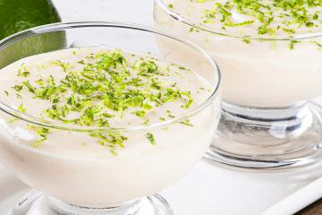
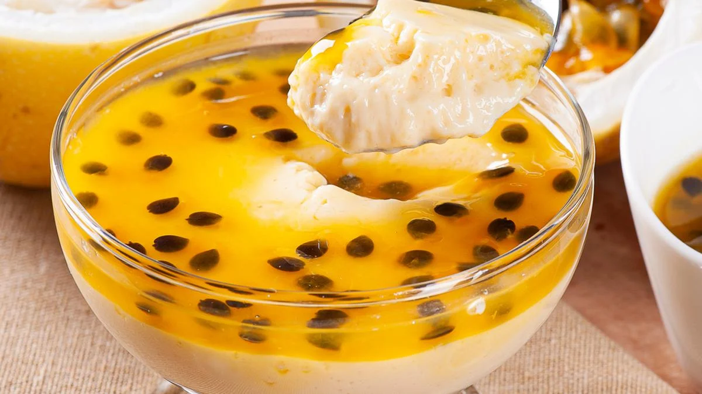

Entrada
Salada

Um frescor inigualável com folhas verdes selecionadas, pedaços suculentos de manga madura, cubos de queijo branco cremoso e finos anéis de palmito. Tudo harmonizado com um molho especial, levemente cítrico.
Para Moura: Nuggets
Os Nuggets da Mônica são crocantes por fora, suculentos por dentro e tão saborosos que até o Cebolinha vai parar de planejar suas travessuras. Com um tempero irresistível, eles fazem qualquer refeição virar uma aventura! Se você comer tudo de uma vez, vai ser um "comedor profissional de Nuggets" – um título digno de respeito na turma!
Prato Principal
Lasanha

Camadas de massa artesanal intercaladas com um robusto molho bolonhesa, preparado com carne moída temperada, tomates frescos e ervas aromáticas, finalizado com um gratinado irresistível de queijos. Acompanha arroz branco soltinho, perfeito para equilibrar os sabores.
Sobremesa
Mousse de Limão
O mousse de limão é uma sobremesa leve e refrescante, com uma combinação perfeita entre a suavidade do creme e o toque cítrico do limão. Sua textura cremosa se derrete na boca, proporcionando uma sensação de frescor a cada colherada. O sabor do limão, com sua acidez suave, contrasta delicadamente com a doçura do leite condensado e do creme de leite, criando um equilíbrio delicioso e vibrante.
Mousse de Maracujá
O mousse de maracujá é igualmente suave e cremoso, com o sabor exótico da fruta trazendo uma acidez sutil e marcante. Sua textura aveludada e leve é acompanhada pelo sabor intenso e refrescante do maracujá, que se mistura perfeitamente com a doçura dos ingredientes, criando uma sobremesa delicada e saborosa. Ambos são opções de mousses que combinam frescor e doçura, ideais para quem busca uma sobremesa tropical e encantadora.